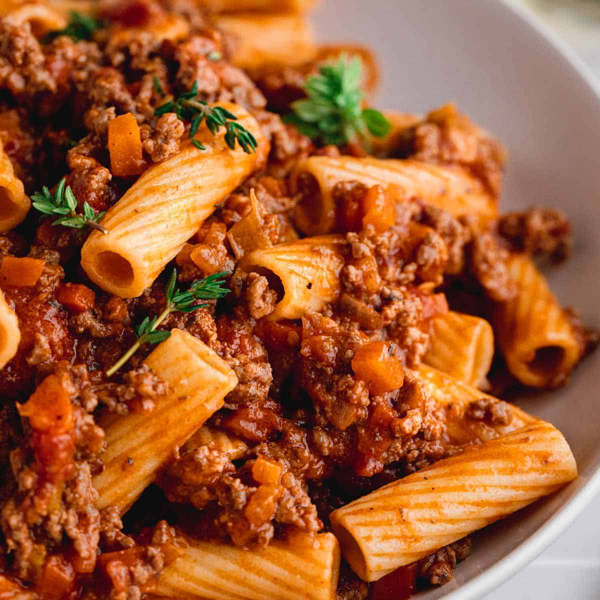

Home
Pasta Bolognese

Bolognese sauce, known in Italian as ragù alla bolognese or ragù bolognese, is the main variety of ragù
in Italian cuisine. It is associated with the city of Bologna. Ragù alla bolognese is a slowly cooked meat-based
sauce, and its preparation involves several techniques, including sweating, sautéing, and braising.
Ingredients:
- Tomatenblokjes
- Gehakt
- Bleekselderij
- Ui
- Knoflook
- Wortel
- Pasta naar keuze
Method:
- Heat olive oil in a pan over medium heat.
- Add chopped onion, carrot, and celery; sauté for 5 minutes.
- Stir in minced garlic and cook for another 1 minute.
- Add ground beef and cook until browned.
- Pour in canned tomatoes, tomato paste, and wine (optional); stir to combine.
- Add salt, pepper, and Italian seasoning, then simmer for 30 minutes.
- Cook pasta according to package instructions.
- Drain pasta and mix with the bolognese sauce.
- Serve with grated Parmesan cheese on top.
- Enjoy!